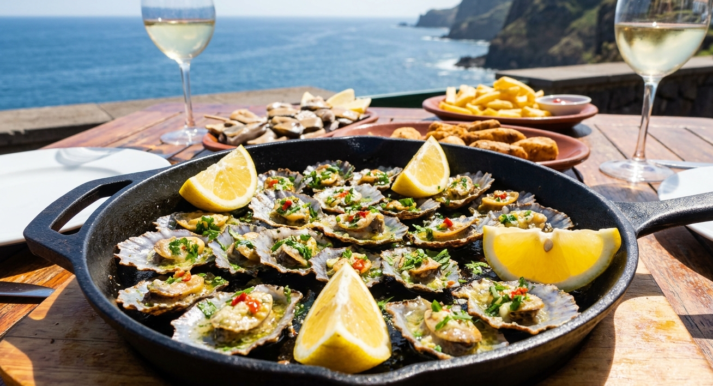

Home
Lapas Grelhadas (Grilled Limpets)

Description
Lapas Grelhadas are a traditional seafood dish from Madeira Island,
Portugal. Limpets are grilled in their shells with a simple mixture of
garlic, butter, and lemon juice. The flavor is rich, slightly salty, and
fresh from the sea. They are usually served as a starter with bread to
soak up the delicious sauce.
Ingredients
- 500g fresh limpets (lapas)
- 3 cloves of garlic
- 50g butter
- Juice of 1 lemon
- Salt (to taste)
- Fresh parsley (optional)
Steps
-
Clean the limpets and place them on a tray with the shell facing down.
- Crush the garlic and melt the butter in a pan.
- Add the garlic to the butter and cook for 1-2 minutes.
- Drizzle the garlic butter over each limpet.
- Grill over high heat for 5-7 minutes until cooked.
- Remove from heat and add lemon juice on top.
- Garnish with parsley and serve immediately with bread.